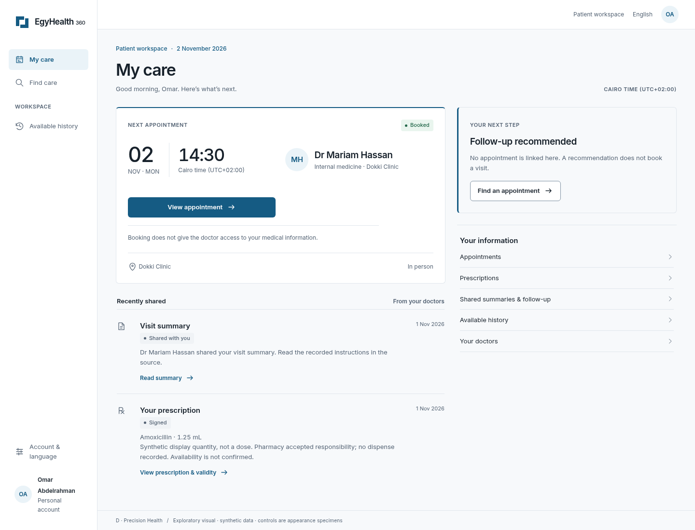
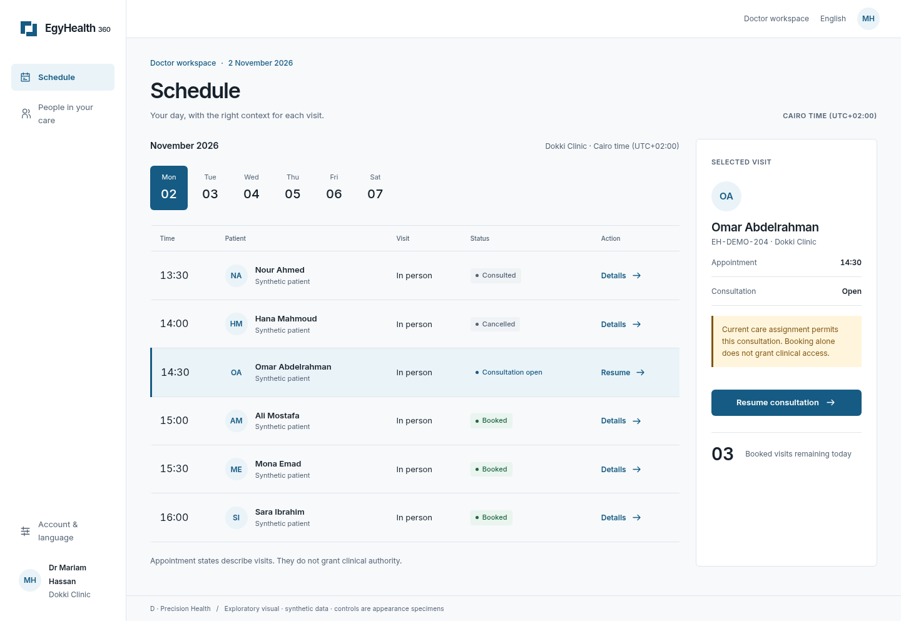
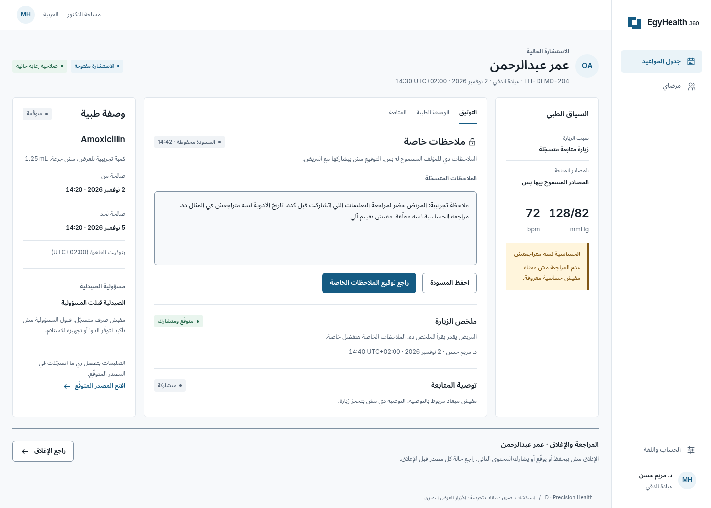

Patient / My care / English / 1440px source

Doctor / Schedule / English

Doctor / Active consultation / Arabic RTL

Review question: Would you want to use and show this product? Patient / doctor fit, Arabic quality, identity and remaining refinements require Product Owner judgment. No calculated winner.